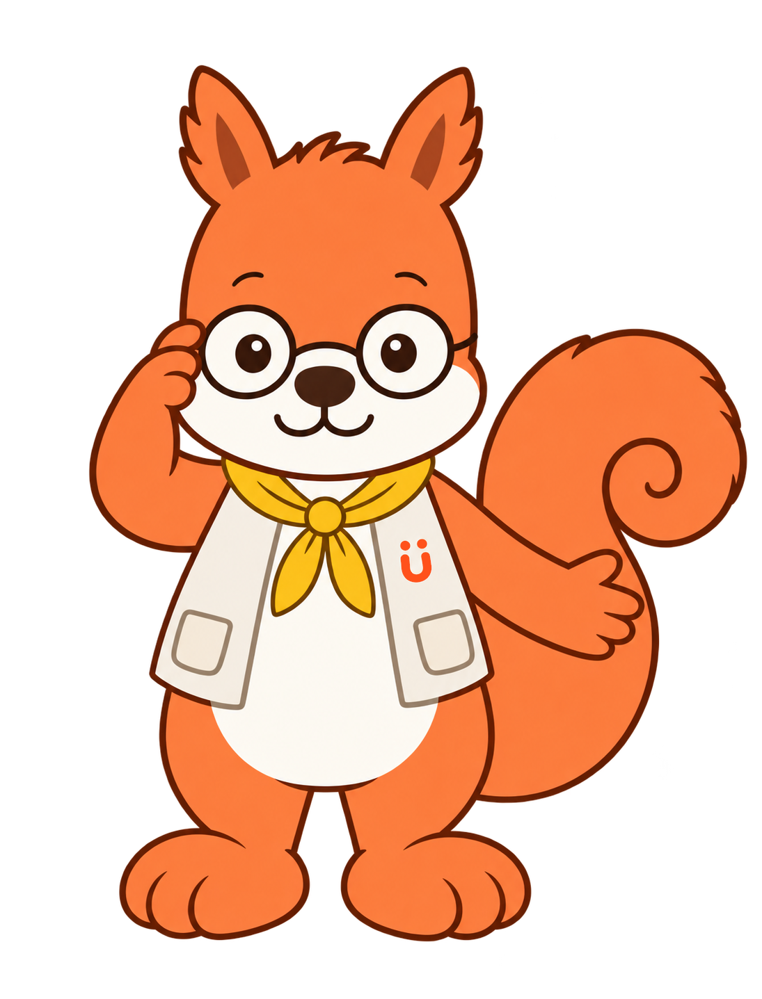
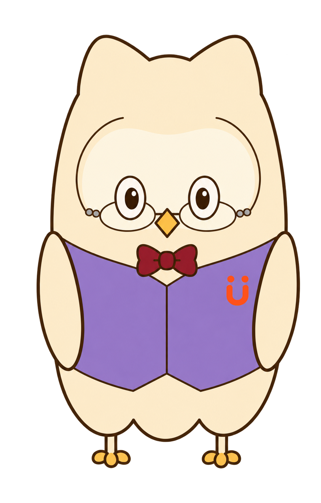
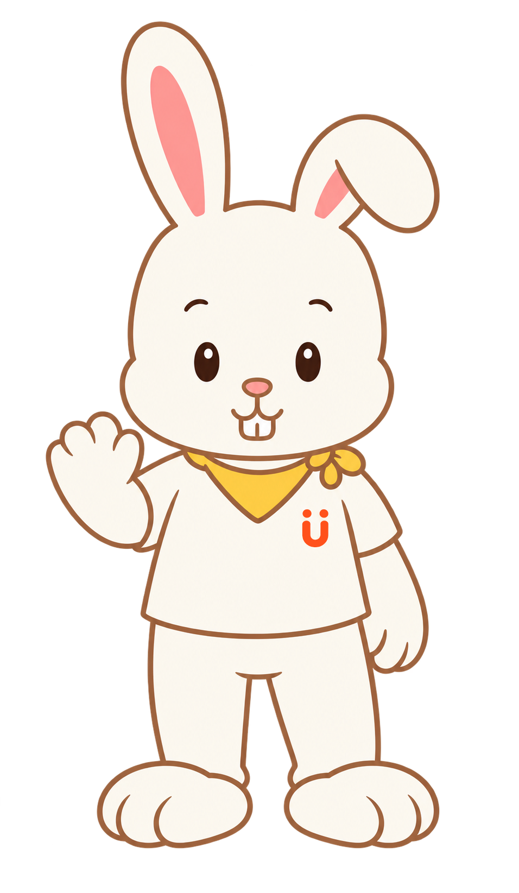

今の情報から、ひと場面を提案します。
子どもの姿は順番どおりとは限りません。見方を行き来したり、見られないまま別の姿へ広がることもあります。 この見方について

近いものをひとつ。あとで変えられます。
最近の暮らしから

「いやだったね」と短く受け取り、いったん手を止めてみます。正しいことばを言わせる必要はありません。
受け取ってもらった後に、体の力、視線、表情がどう変わるかを見ます。
伝え方の形よりも、「自分の方法で伝わった」経験を大切にします。
子どもの姿は、分野ごとに違うペースで現れます。同じ見方へ戻ったり、ある姿を経由せず別の姿へ広がることもあります。
この画面は診断やスクリーニングではなく、家族が日常の姿を見つけ、話すためのものです。
心配が続く場合は、記録を持って専門家へ相談できます。「個人差」だけで終わらせないための相談導線です。